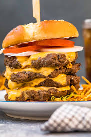
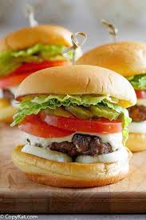
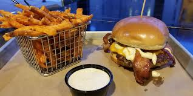

I have been a food Blogger for 10 years and i have one many awards for my blogs.
I have been on the ellen show for my food blogs.
It was rough at the start most people didn't see my blogs but one week my blogs just blew up
and I was fetured on many main stream tv shows.
My food Journey has not been that intresting my family didn't have anthing like a special meal.
but we could make some really good burgers.
My friends liked our burgers and it was always what i would have for my B-Day
One of my favorite times was when I went to florida and found a great burger joint
 |
 |
|  |  |
There are so many ways you can cook or make a burger but my favorite has to be a smash burger
in the first picture you can see a clasic chesses burger with a patty lettus tomato chesse and onion
Burgers are good becuase if done right they are very savery and makes your mouth fell like its in heaven